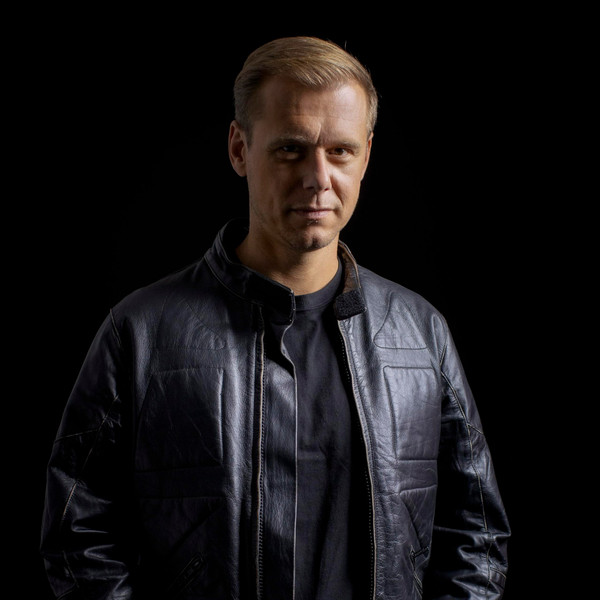

La música electrónica es un género musical que utiliza instrumentos electrónicos y tecnología para crear sonidos y ritmos modernos. La música electrónica abarca una amplia variedad de estilos, que van desde el techno y el house hasta el dubstep y el trance.
El origen de la música electrónica se remonta a mediados del siglo XX, cuando los avances tecnológicos comenzaron a permitir a los músicos experimentar con sonidos sintetizados. Uno de los pioneros de este género fue el compositor alemán Karlheinz Stockhausen.
La música electrónica en los años 2000 en adelante ha experimentado un auge sin precedentes en términos de popularidad y diversificación.
Caracterizado por su ritmo de cuatro en el piso y sus líneas de bajo profundas, el house ha evolucionado en múltiples subgéneros, incluyendo deep house, progressive house y tech house. DJs como Frankie Knuckles, Carl Cox y David Guetta han sido figuras clave en la popularización del house.
Con una estructura repetitiva y un enfoque en la producción de sonido, el techno ha influido enormemente en otros géneros de música electrónica. Artistas como Richie Hawtin, Jeff Mills y Carl Craig han llevado el techno a nuevas alturas, experimentando con nuevas tecnologías y técnicas de producción.
El trance se destaca por sus melodías elevadas y su capacidad para crear estados de trance en sus oyentes. Con un tempo rápido y estructuras de canciones que construyen y liberan tensión de manera efectiva, el trance ha sido un favorito en los festivales de música y clubes nocturnos.
Se caracteriza por sus ritmos sincopados, bajos profundos y wobble bass. El género alcanzó un pico de popularidad con artistas como Skrillex, que introdujo el dubstep al mainstream con su estilo agresivo y drops masivos.
Nacido a finales de los años 90 en los Países Bajos y otros países europeos. Combina elementos del hardcore, hard trance y techno. Se caracteriza por sus líneas de bajo intensas, bombos profundos, melodías enérgicas y una velocidad de 135 a 150 BPM (pulsaciones por minuto)

Conocida como la disquera independiente de música de baile más grande del mundo. Fundada en 2003 por el icono del trance Armin van Buuren (junto a Maykel Piron y David Lewis), es el hogar de docenas de miles de pistas, enfocándose en trance, house y progressive.
Una potencia absoluta en el EDM comercial, house y big room. Adquirida por Warner Music Group, es la cuna de varios subsellos famosos como Musical Freedom (de Tiësto) y Hexagon (de Don Diablo).
Es el sello discográfico independiente fundado por la superestrella neerlandesa Martin Garrix en marzo de 2016.
Sello distintivo por su enorme impacto en géneros como el dubstep, drum and bass y electropop. Es admirado por su modelo de negocios flexible y justo para creadores independientes.
Es un sello discográfico belga de techno y una serie de eventos de gran renombre mundial, fundado en 2019 por la aclamada productora y DJ Charlotte de Witte. Originalmente el proyecto nació en 2015 como un concepto de fiestas y programa de radio en el club Fuse de Bruselas, pero rápidamente evolucionó hasta convertirse en uno de los pilares del techno contemporáneo.